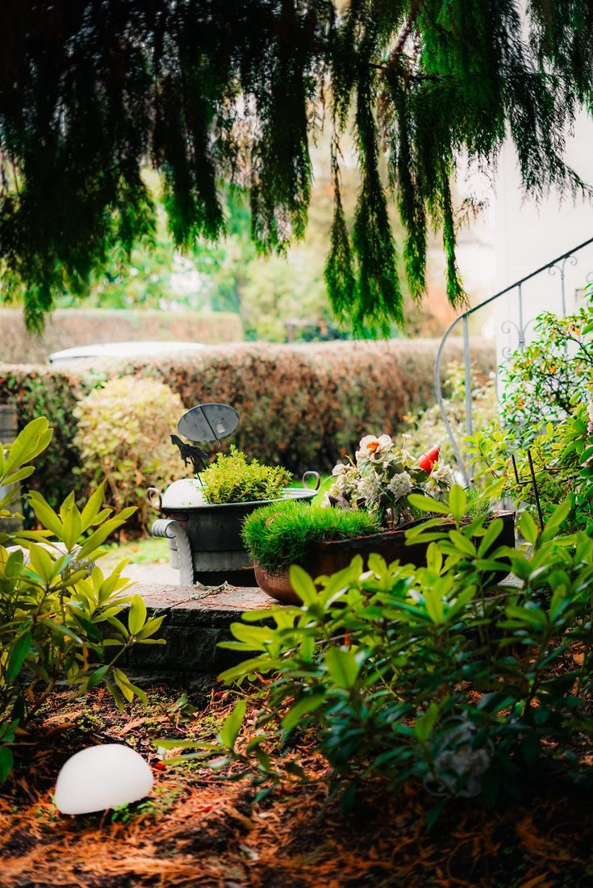
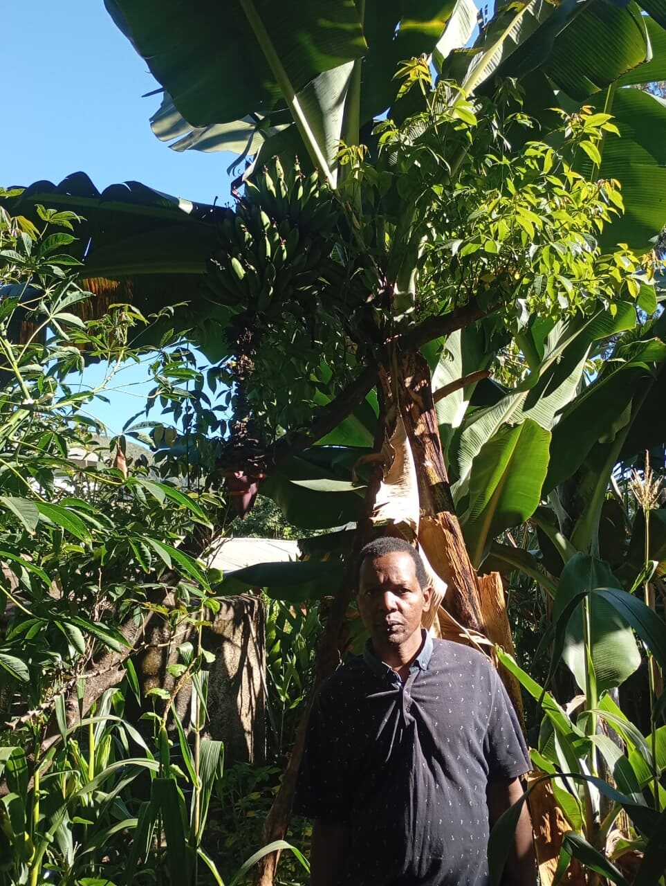

Cultivating conscious consumption — a record that follows every crop from seed to table.
From seed to table, every crop has a story.
GreenTrack follows every crop from planting to plate, creating transparency between the growers, businesses, and consumers of Kenya's food system.
Plant. Grow. Trace. Harvest. Serve.
A plot is pinned before a single seed goes in
GPS location, crop, and planting method are logged first — everything that follows is attached to this one record.
Irrigation, weather, and pest checks, logged as they happen
Not backfilled at season's end — recorded the day of, so the record matches what actually happened in the field.
Every entry becomes part of one continuous record
Plot data, treatment history, and photos accumulate into a single traceable thread, not scattered notebook pages.

The harvest button won't unlock early
A pre-harvest safety interval has to clear on its own countdown before a batch can be logged at all.
A QR tag carries the whole record to the table
Anyone downstream — a buyer, a chef, a diner — scans the same record the grower built, with nothing added or removed.
One record, five different people relying on it
Not a feature list — a chain of people, each trusting the record left by the one before them.
A farmer discovers a problem before it becomes a loss.
A photo of a spotted leaf is meant to come back with a matched pest ID and treatment before the damage spreads past one row.
Read a farmer's story →A chef won't have to take a supplier's word for it.
A scan at the kitchen door is meant to confirm harvest date and certification in seconds — an answer a chef can pass on to a customer.
See how scanning works →A shopper stops gambling on the word "fresh."
One scan in the market aisle is meant to replace a guess about origin with a checkable answer.
Read farmer stories →A transporter hands off a crate — and the record travels with it.
Aggregators, transporters, and distributors are meant to log custody transfer at each handoff, so no batch goes untracked between farm and kitchen.
See how tracking works →One crate, six handoffs, zero blind spots
Aggregators, transporters, and distributors each log their own handoff — so a batch that changes hands four times is still one unbroken record, not four separate stories.
Three roles, one shared record
The interface adapts to who's holding the phone — a grower manages plots, a consumer just scans.


Farmer Dashboard · Crop Log · Quick Actions — chef and consumer scanning views live in the app's Verify tab
A Few Crops Along the Way
A mix of field photography from our own research and representative imagery of Kenyan agriculture.
 Jonathan Chomba, coffee farmer
Jonathan Chomba, coffee farmer Erah Chomba, grower — Subukia
Erah Chomba, grower — Subukia John Maina, farmer — Subukia
John Maina, farmer — SubukiaKenyan tea country
 Coffee cherries, Subukia
Coffee cherries, SubukiaA Kenyan produce market
- The app, in the field
 Spinach, early growth
Spinach, early growth
John's banana tree, Subukia Coffee rows, Subukia
Coffee rows, Subukia
Why we're building a record instead of another marketplace
Most agritech products try to sit between a grower and a buyer and take a cut of the introduction. GreenTrack doesn't introduce anyone. It just makes sure that once a grower and a buyer are already talking, neither one has to take the other's word for what's in the crate.
That's a smaller promise than "revolutionizing agriculture," and we've kept it on purpose. A record is only trustworthy if it's boring — the same GPS pin, the same timestamp, the same treatment log, whether the batch is worth ten shillings or ten thousand. We'd rather be the app growers forget is even running in the background than the one they have to think about.
Meet Erah, Jonathan, and John — the farmers behind our field research
Read the full journey →A batch tag is meant to be checked against the record, not just the retelling.
A batch tag is designed to carry the same timestamped logs a grower enters in the field: plot, irrigation, pest treatment, and a harvest that can't be logged early even if someone tries.
- Logged GPS plot, irrigation, and pest data entered at the source.
- Locked Harvest can't be recorded until the safety interval clears.
- Tagged A QR code generated only once the record is complete.
A student project that spends more time on plots than in a classroom.
Choose Your GreenTrack Edition
Pick the topics you want in your inbox — we'll only send what you actually asked for.